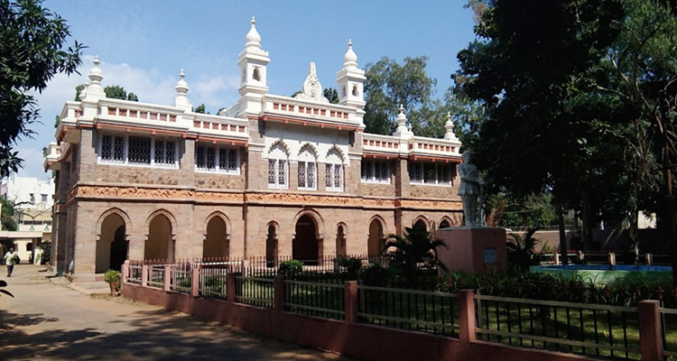

Krishna district is a district in the coastal Andhra Region in Indian state of Andhra Pradesh, with Machilipatnam as its administrative headquarters. It is surrounded on the East by Bay of Bengal, West by Guntur, Bapatla and North by Eluru and NTR districts and South again by Bay of Bengal. Panthers, hyenas, jungle cats, foxes, bears and other carnivorous mammalian fauna are found here. Deer, spotted deer sambar, blackbuck
and other herbivorous animals are found in the inland forests. The district has a large number of Murrah buffaloes and cows.
Panthers, hyenas, jungle cats, foxes, bears and other carnivorous mammalian fauna are found here. Deer, spotted deer sambar, blackbuck
and other herbivorous animals are found in the inland forests. The district has a large number of Murrah buffaloes and cows. | District headquarters | Machilipatnam |
|---|---|
| Revenue divisions | Machilipatnam,Gudivada,Vuyyuru |
| Cities | Machilipatnam,Gudivada |
| Towns | Pedana,Vuyyuru |
| Lok Sabha constituencies | Machilipatnam |
| Assembly constituencies | Avanigadda,Gannavaram,Gudivada, Machilipatnam,Pamarru ,PedanaPenamaluru |